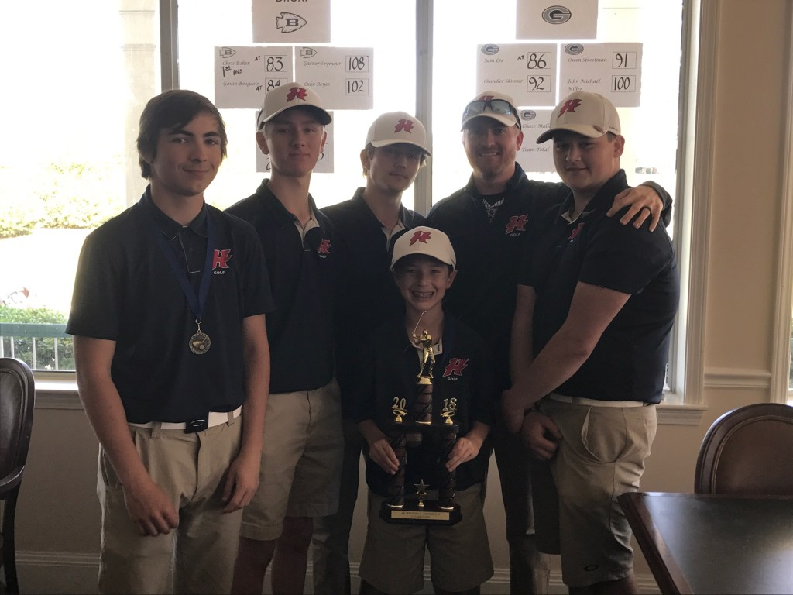
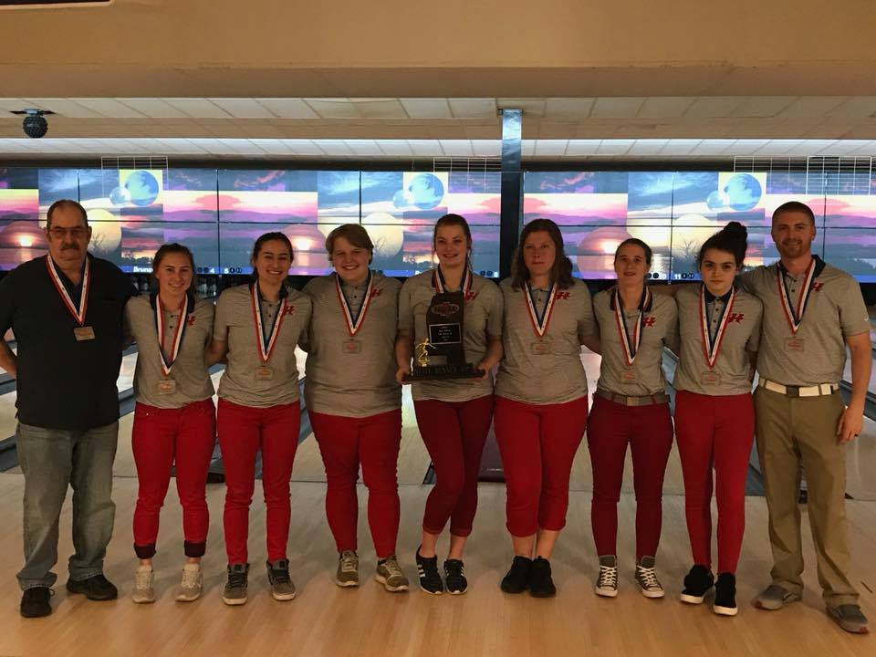

HHS men’s golf is 6A Region 8, District 8 champions! The team is made up of Ty Lamb, Gabe Hudson, Seth Michel, Carter Duff, and 7th grader Chase Robles. Gabe and Seth were named to the all-district team. This team is coached by Mr Trevin Burge.

Our HHS Bowling Teams competed at the State Tournament today. The lady's team were named State Runners Up, coming in 2nd in the final round. The men's team came in 4th. Ellen Seeger and Nick Cumberland were named to the state team!
